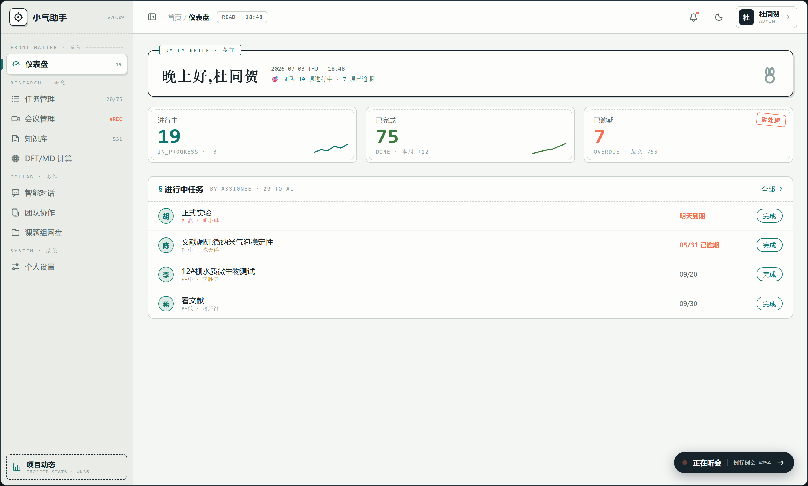
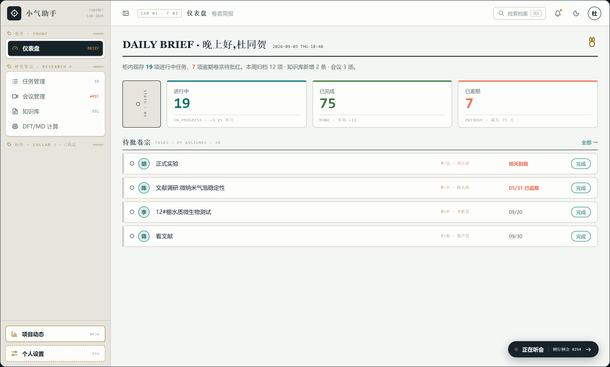
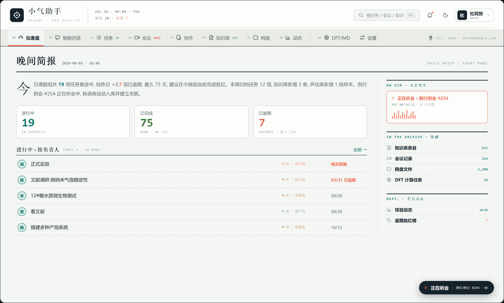
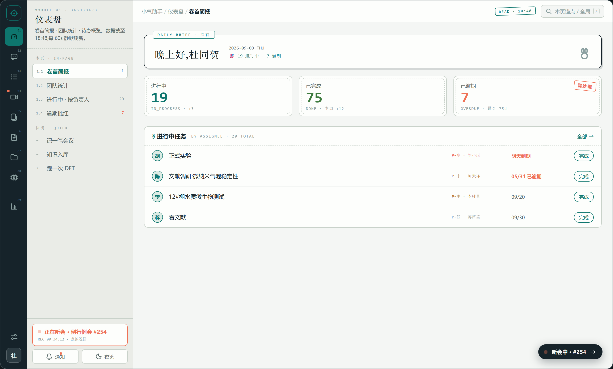

100%
滚轮缩放 · 拖拽平移 · 双击 1:1 · Esc 关闭
侧栏 9 个 menuRoutes + 底部「项目动态」+ 顶栏五件套(折叠/面包屑/铃铛/主题/用户)+ 听会胶囊,统一延续「研究档案」设计语言。四稿共用同一套 16px SVG 图标 sprite(文件夹/相机/铃铛等圆角矩形 + 整数锚点重画,16px 下发糊问题已解决),每稿内置 ☾ 夜览按钮可预览深色模式,点击截图即可放大(滚轮缩放 / 拖拽平移 / 双击 1:1 / Esc 关闭)。
web/src/layouts/MainLayout.vue 的 iconMap 缺 Odometer 与 Cpu:W86 mini batch 1 删 KB 监控入口时误删了仍被 /dashboard meta.icon 引用的 Odometer(并非"不再走侧栏"),Cpu 则从注册以来就漏了。侧栏「仪表盘」「DFT/MD 计算」两项图标一直空白。已补回并留注释:删别名前必须 grep router meta.icon。与现网 MainLayout 结构一一对应(侧栏+顶栏+胶囊原位),只换档案皮肤:标本签分组、mono 编号与计数徽标、印章式项目动态。改动的 <style> 可整段落回,模板几乎不动。

五斗橱隐喻:侧栏变抽屉(黄铜标签+拉手,可收起),选中项像抽出的文件夹;内容区是编目页 —— 左侧书脊索引卡统计、带穿孔的任务卡行。

整页做成实验室公报:大刊头(报头+期号+工具带)+ 横排导航条 + 正文/栏目双栏。内容宽度最大化,「正在发生」升为右栏常驻栏目(含波形)。

64px 墨色轨道选模块,252px 上下文面板随模块换脸(页内锚点/目录树/快捷动作)。面包屑升级三级,听会入面板常驻卡,顶栏瘦到只剩检索。
